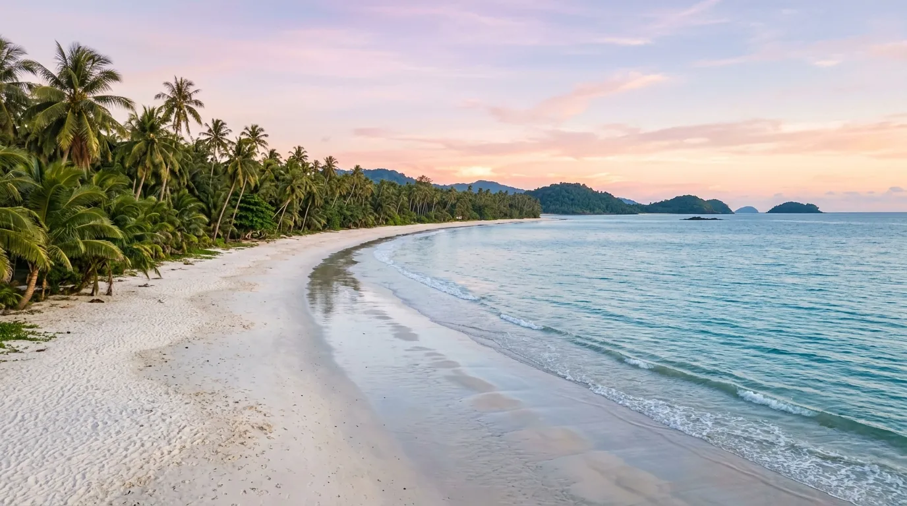

Bagi pecinta wisata alam yang mendambakan suasana pantai tenang tanpa keramaian, Pantai Tanjung Penyu bisa jadi jawabannya. Pantai ini terletak di Desa Sitiarjo, Kecamatan Sumbermanjing Wetan, Kabupaten Malang, Jawa Timur, dan menjadi salah satu destinasi hidden gem di jalur wisata Malang Selatan. Meski keindahannya tak kalah dari pantai-pantai populer lain seperti Balekambang atau Sendang Biru, Pantai Tanjung Penyu masih relatif sepi pengunjung sehingga cocok untuk healing dan menikmati suasana pantai yang damai.
1. Asal-Usul Nama Pantai Tanjung Penyu
Nama "Tanjung Penyu" bukan tanpa alasan. Di area utama pantai ini terdapat beberapa patung penyu yang menjadi ikon sekaligus daya tarik tersendiri bagi wisatawan. Menurut pengelola setempat, kawasan ini dulunya pernah menjadi lokasi penetasan telur-telur penyu, sehingga nama tersebut disematkan sebagai bentuk penghormatan terhadap sejarah alaminya.
Pantai Tanjung Penyu sendiri tergolong destinasi wisata baru karena baru diresmikan pada tahun 2024. Meski demikian, fasilitas yang tersedia sudah cukup lengkap untuk menunjang kenyamanan pengunjung.
2. Daya Tarik dan Aktivitas di Pantai Tanjung Penyu
Pantai Tanjung Penyu menawarkan pasir putih yang lembut serta air laut berwarna biru kehijauan yang jernih. Ombaknya tergolong landai dan tenang, sehingga cukup aman untuk bermain air maupun berenang di pinggir pantai. Beberapa aktivitas seru yang bisa dilakukan di sini antara lain:

- Bermain air dan berenang di area pantai yang ombaknya tenang
- Bermain pasir karena teksturnya yang halus dan lembut, cocok untuk membuat istana pasir
- Berburu foto di spot selfie yang telah disediakan pengelola
- Menikmati matahari terbenam di sore hari, saat suasana romantis begitu terasa dari tepi pantai
- Berkemah (camping) di area camp yang tersedia bagi wisatawan yang ingin bermalam
Kawasan sekitar pantai juga dikelilingi pepohonan rindang dan perbukitan hijau yang menambah kesejukan suasana, sehingga banyak yang menyebut nuansanya mirip dengan pesona kepulauan di kawasan timur Indonesia.
3. Lokasi dan Akses Menuju Pantai Tanjung Penyu
Pantai Tanjung Penyu berada di Jalur Lintas Selatan (JLS) Malang, satu jalur dengan deretan pantai populer lain seperti Kondang Merak, Balekambang, Nganteb, Sendang Biru, hingga Sendiki. Lokasinya tergolong mudah dijangkau karena akses jalannya lebar dan kondisinya rata, hanya membutuhkan waktu kurang dari lima menit dari jalan utama JLS menuju pintu loket wisata.
Jika berangkat dari Kota Surabaya, perjalanan menuju pantai ini memakan waktu sekitar 4-5 jam berkendara. Sementara dari pusat Kota Malang, perjalanan biasanya ditempuh sekitar 3 jam tergantung kondisi lalu lintas dan rute yang dipilih.
4. Jam Operasional dan Harga Tiket Masuk
Pantai Tanjung Penyu buka setiap hari mulai pukul 06.30 hingga 18.00 WIB, sehingga sangat ideal bagi wisatawan yang ingin berburu suasana matahari terbit maupun terbenam. Untuk tiket masuk, pengunjung hanya perlu merogoh kocek sekitar Rp10.000 per orang, ditambah biaya parkir kendaraan sebesar Rp5.000. Harga yang cukup terjangkau ini menjadikan Pantai Tanjung Penyu sebagai pilihan wisata ramah kantong namun tetap memanjakan mata.
5. Fasilitas di Pantai Tanjung Penyu
Sebagai destinasi yang tergolong baru, Pantai Tanjung Penyu sudah dilengkapi berbagai fasilitas penunjang, di antaranya:
- Area parkir luas untuk kendaraan roda dua maupun roda empat
- Mushola
- Toilet dan keran bilas yang tersebar di beberapa titik
- Gazebo untuk bersantai
- Camp area bagi yang ingin berkemah
- Food court dan warung makan
- Spot selfie ikonik dengan latar patung penyu
- Penyewaan payung pantai dan perlengkapan lainnya
6. Tips Berkunjung ke Pantai Tanjung Penyu
- Datang di pagi hari agar bisa menikmati suasana pantai yang masih sepi dan udara yang sejuk.
- Bawa bekal makanan dan minuman secukupnya meski sudah ada food court di lokasi.
- Gunakan kendaraan pribadi karena transportasi umum menuju lokasi masih terbatas.
- Jangan lupa membawa kamera untuk mengabadikan momen matahari terbenam yang menjadi daya tarik utama.
- Patuhi aturan pengelola demi menjaga kelestarian alam sekitar pantai.
Pantai Tanjung Penyu adalah bukti bahwa Malang Selatan masih menyimpan banyak pesona alam yang belum banyak terjamah. Dengan pasir lembut, air jernih, dan suasana yang masih asri, pantai ini cocok menjadi destinasi pelarian dari hiruk-pikuk kota. Jika kamu mencari pantai tersembunyi yang masih sepi namun tetap nyaman dengan fasilitas memadai, Pantai Tanjung Penyu layak masuk dalam daftar kunjungan berikutnya.